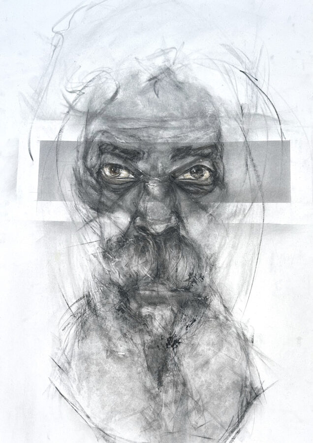

Jesse Howard: A Woke Diaspora
Jesse Howard is a Chicago native who has observed the rhythms and nuances of African American cultural life in Chicago over many decades. His artworks are meant not as portraits but rather as figurative typologies, meant to document and celebrate the rich variety of individual and collective expressions, showing the good, the bad, the beautiful, and the ugly. At the core of this work is a deeply felt, powerful pronouncement of the human spirit.